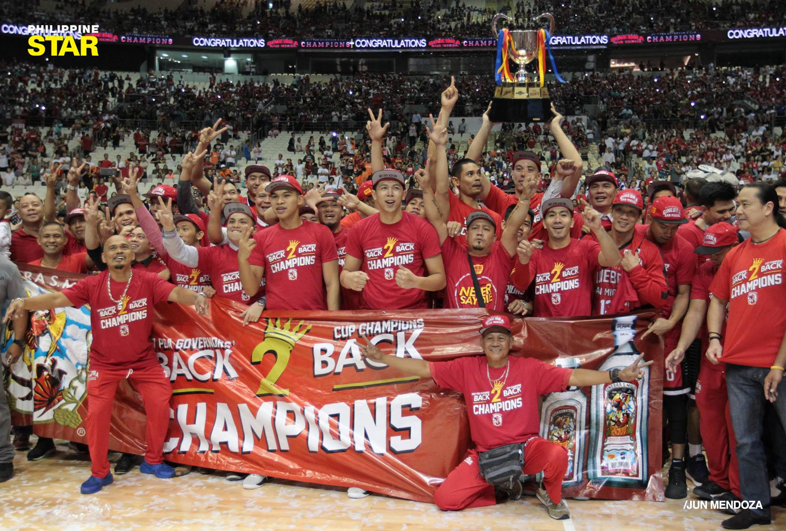

2016
Brownlee joined Ginebra and hit a championship-winning shot in Game 6.
2017

Brownlee returned, leading Ginebra to a back-to-back Governors' Cup title.
2018
Brownlee defied the odds, leading Ginebra to victory against the powerhouse San Miguel Beermen.
2019
Brownlee led Ginebra to a third title, cementing his legacy.
2021

For the fourth time, Brownlee faced off against Meralco and emerged victorious to capture the championship.
2022
Brownlee conquered the Bay Area Dragons, leading Ginebra to another championship victory
2023
Brownlee and Ginebra fell short in their championship quest.
2024
Brownlee aims to reclaim the championship title against TNT
Photo credits: One Sports, Rappler, ESPN PH, ABS -CBN, Tiebreaker Times